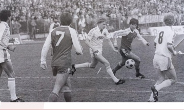
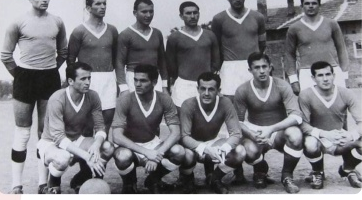
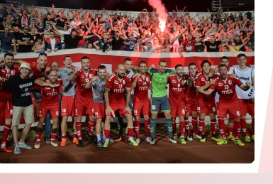

Istorija kluba
Nastanak kluba (1923-1933)

Fudbaleri niškog i leskovačkog Radničkog snimljeni 1923. nakon odigrane prijateljske utakmice
FK Radnički Niš osnovan je 24. aprila 1923. godine, najpre pod imenom „Iskra“, koje je kasnije promenjeno u „Proleter“, a zatim u „Radnički“. Prvi predsednik kluba bio je Miloš Marković, dok su među osnivačima i igračima bili Josip Kolumbo i Stanko Paunović. Klub je brzo stekao simpatije građana Niša zahvaljujući borbenosti i želji za napredovanjem. Veliku podršku pružali su mu građani, a posebno Kulturno-umetničko društvo „Abrašević“, koje je 1924. godine organizovalo humanitarnu zabavu radi prikupljanja sredstava za rad kluba. U prvim godinama postojanja, Radnički i njegovi članovi često su se suočavali sa pritiscima policije i vlasti zbog svog imena, boja dresova i petokrake na grbu.
Ulazak u prvu ligu (1953-1963)

6. oktobar 1962. godine, novi član Prve lige Radnički Niš pred utakmicu sa OFK Beogradom
Tokom pedesetih godina, Radnički je postao poznat po prijateljskim utakmicama sa stranim klubovima, poput Makabija, Graca i Iraklisa. Prve međunarodne turneje organizovane su u Grčkoj 1955. i 1957. godine. U sezoni 1955/56. klub je prvi put zaigrao u drugom rangu takmičenja, a pripajanje Trgovačkog 1957. dodatno je ojačalo ekipu.
Veliki napredak doneli su dolazak golmana Miodraga Kneževića 1960. godine i ulaganje u mlade fudbalere iz Niša i južne Srbije. Rukovodstvo kluba postavilo je cilj ulaska u Prvu jugoslovensku ligu, što je ostvareno 1962. godine, nakon dramatičnih utakmica protiv skopskog Vardara i pobede posle izvođenja jedanaesteraca.
Ovaj uspeh izazvao je veliko slavlje u Nišu, a popularnost kluba potvrđena je i prvim televizijskim prenosom sa stadiona Čair, 2. decembra 1962. godine, na utakmici protiv Partizana.
Povratak u Evropu (2013-2023)

Posle 35 godina, Radnički se 2018. vratio na evropsku scenu, osvojivši treće mesto u Superligi. Već naredne sezone ostvario je još veći uspeh i postao vicešampion Srbije.
Niški Radnički je 2016. i 2017. godine bio blizu plasmana na evropsku scenu, a 2017. zauzeo je peto mesto, što je bio najbolji rezultat u poslednje tri decenije. Dolaskom novog rukovodstva na čelu sa Ivicom Tončevom klub je finansijski stabilizovan i ekipa je ojačana. 17. maja 2018. godine, pobedom nad Napretkom 4:1, Radnički je osvojio treće mesto u Superligi i prvi put posle mnogo godina izborio plasman u kvalifikacije za Ligu Evrope.
2018/19. – Radnički je ostvario istorijski uspeh i završio prvenstvo na drugom mestu, postavši vicešampion Srbije. Ostvario je 25 pobeda, 10 remija i 2 poraza. Nermin Haskić bio je najbolji strelac lige sa 24 gola, a trojica igrača Radničkog izabrana su u idealni tim. U Kupu Srbije stigao je do polufinala, dok je u kvalifikacijama za Ligu Evrope eliminisao Gziru Junajted, ali ispao od Makabija iz Tel Aviva.
2019/20. – Radnički je u kvalifikacijama za Ligu Evrope ispao od estonske Flore. U Superligi, koja je zbog pandemije koronavirusa skraćena, zauzeo je peto mesto sa 52 boda. Zbog skraćenja sezone nije imao priliku da se kroz plej-of izbori za novi plasman u Evropu. Ekipu su tokom sezone vodili Simo Krunić, Milorad Kosanović i Radoslav Batak.